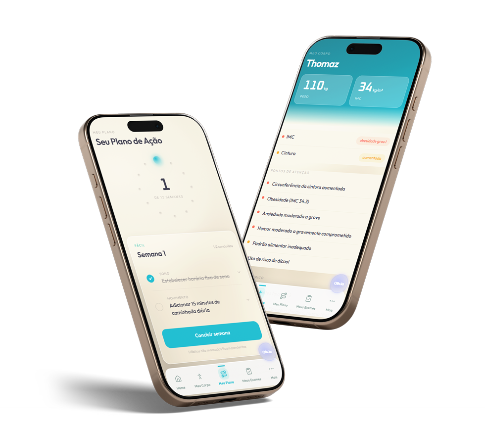

Sua calculadora estimou
Envelhecimento em 1,4x
Seu ritmo estimado começou a descolar da idade do RG.
Estimativa educativa baseada nas suas respostas. Não é exame nem diagnóstico.
Dá pra fazer o ponteiro andar pro outro lado.
O MAPEIA funciona em 2 fases: primeiro você descobre a idade real do seu corpo. Depois, segue o plano pra mudar a trajetória, e mede de novo.
Fase 1 · Primeiros dias
Medir
Você envia os exames que já tem, esses perdidos no WhatsApp e na gaveta. A plataforma junta tudo, cruza do jeito certo e te devolve a idade biológica do seu corpo, calculada nos seus biomarcadores, mais o mapa do que está puxando o número pra cima.
Fase 2 · 90 dias seguintes
Mudar a rota
Com o plano de ação nas alavancas certas do seu caso (sono, comida, movimento, cabeça), o corpo responde. Daqui uns meses você mede de novo e vê o ponteiro andar pro outro lado. O seu corpo tem memória. O MAPEIA é a memória da sua saúde.
O que puxou o seu ritmo
Dos sinais que você relatou na calculadora, estes são os que mais pesaram:
O que você encontra dentro do app
Funciona no celular e no computador, sem instalar nada. Você entra, envia seus exames e o app faz o resto.

🔒 Pagamento 100% seguro processado pela Hotmart · O acesso chega no seu e-mail em poucos minutos · Validade de 3 meses


● Quem está falando com você
Dra. Iana Lavigne & Dra. Amanda Rocha
Iana: cirurgiã de catarata e transplante de córnea pela UNIFESP, formada em Medicina do Estilo de Vida por Harvard. Amanda: cardiologista pela USP, que cuida com as próprias mãos do que é mais sério de tudo, o coração. Duas médicas que passaram a vida vendo gente chegar tarde, e construíram o MAPEIA pra você chegar antes.
Agora Você Tem Apenas
Dois caminhos
Caminho 1
Sair marcando exame por exame por conta própria, gastar fácil mais de R$ 1.500, e terminar com uma pilha de números soltos que ninguém cruza.
Caminho 2
Descobrir hoje a idade que o seu corpo tem de verdade, por R$ 97, com as respostas da sua calculadora já dentro do seu perfil. E sair com o plano na mão.
A escolha é sua: seguir mais um ano ouvindo "está tudo normal", ou olhar o número enquanto ainda é cedo.
Descobrir tarde é o que custa caro. Saber a tempo é o que muda a história.
Tudo que você leva no MAPEIA:
Uma investigação assim, feita por fora, exame por exame, passa fácil de R$ 1.500. Aqui você tem 3 meses de acesso completo por:
Por apenas 12x de
R$ 10,00
ou à vista R$ 97
Quero descobrir a idade do meu corpoPagamento seguro via Hotmart. Acesso enviado por e-mail em poucos minutos, válido por 3 meses.
Como recebo o acesso?
Assim que o pagamento é confirmado, o seu acesso chega no seu e-mail em poucos minutos, com validade de 3 meses. Funciona no celular e no computador, sem instalar nada.
É pagamento único? É seguro?
Sim. R$ 97 à vista ou 12x de R$ 10,00 no cartão, por 3 meses de acesso completo. Sem mensalidade, sem taxa escondida. O pagamento é processado pela Hotmart, a maior plataforma de produtos digitais do Brasil, com dados criptografados. Aceita cartão, Pix e boleto.
Garantia incondicional de 7 dias
Entre, envie seus exames, veja sua idade biológica e o plano. Se não fizer sentido pra você, devolvemos cada centavo, conforme o Artigo 49 do CDC. Sem burocracia. O risco é todo nosso.
Dúvidas frequentes
Em quanto tempo descubro minha idade biológica?
Assim que você envia seus exames, a plataforma processa e te devolve o resultado com o plano. Não precisa esperar semanas nem marcar consulta.
Preciso fazer exames novos pra começar?
Não. A plataforma trabalha com os exames que você já tem, mesmo antigos, espalhados em PDFs e fotos. Se faltar algum marcador importante pro seu perfil, ela te indica exatamente qual pedir.
Como é possível calcular a idade do corpo?
A ciência dos relógios biológicos usa um conjunto de marcadores comuns de sangue que, cruzados do jeito certo, estimam quantos anos o seu corpo tem por dentro. Tem método e estudo sério por trás. A plataforma faz esse cruzamento pra você e explica sem jargão.
Já faço checkup todo ano. Isso substitui?
Não substitui, completa. O checkup tira a foto; o MAPEIA monta o filme: junta seu histórico, mostra a tendência e te devolve um plano. Você continua com seu médico, e chega na consulta com tudo organizado.
E se eu não gostar?
Você tem 7 dias de garantia incondicional. Não fez sentido? Devolvemos 100% do valor, sem pergunta. O risco é zero.
O valor de R$ 97 é condição desta página. O próximo reajuste leva o acesso de volta pra R$ 297.
Quero descobrir a idade do meu corpo